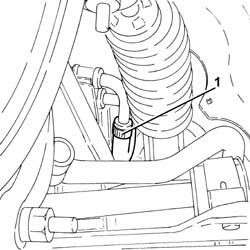
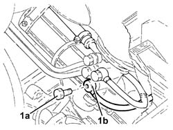
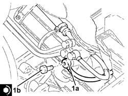

4130B72 RETURN PIPE FROM POWER STEERING CASE TO POWER STEERING FLUID RESEVIOR R R
- Path
- Procedures > 41 STEERING UNIT > 4130 POWER STEERING > 4130B POWER STEERING HYDRAULIC SYTEM > 4130B72 RETURN PIPE FROM POWER STEERING CASE TO POWER STEERING FLUID RESEVIOR R R
- Kind
- repair procedure (removal / refitting; the operation number is the code)
- Applies to
- engines: 3.2 V6; all production periods
- Interactive page
- https://sloeber94.github.io/elrnDB-aGt/en/#/125001420
Applies to: engines: 3.2 V6; all production periods
 Removing
Removing
 Refitting
RefittingPosition the vehicle on the ramp
Proceed with removal
Op. 7055B54 UNDER-ENGINE GUARD - R R
Proceed with removal
1. Working from the left wheel arch, disconnect the return pipe from power steering box to the rigid pipe on the rigid pipe side.
Op. 4450B02 LEFT FRONT WHEEL R R

Applies to: engines: 3.2 V6; all production periods
Proceed with removal
Proceed with removal
1. Undo the connector (1a), disconnect the return pipe from the power assisted steering box to the rigid pipe (1b), power assisted steering box side, and remove it.
Op. 5530B52 BATTERY DRIP TRAY/SUPPORT - R.R.

Applies to: engines: 3.2 V6; all production periods
Refitting
Removing1. Place the return pipe from power steering box to the intermediate pipe (1a) back in its housing, connect it to the power steering box and secure by tightening the connector (1b) to the specified torque.
 | Fastening | Component | Ø | Value (daNm) |
|---|---|---|---|---|
1b | Connector | POWER STEERING/EXCHANGE BOX RUBBER HOSE | M12 | (Power steering box side) 2.7 ÷ 3.3 |

Applies to: engines: 3.2 V6; all production periods
Proceed with refitting
Op. 5530B52 BATTERY DRIP TRAY/SUPPORT - R.R..
Proceed with refitting
Connect the return pipe from power steering box to the rigid pipe on the rigid pipe side and tighten the band.
Proceed with refitting
Op. 4450B02 LEFT FRONT WHEEL R R.
Proceed with refitting
Op. 0010T71 POWER STEERING FLUID CHECK LEVEL AND TOP UP IF NECESSARY.
Proceed with refitting
Op. 7055B54 UNDER-ENGINE GUARD - R R.
Remove the car from the ramps.